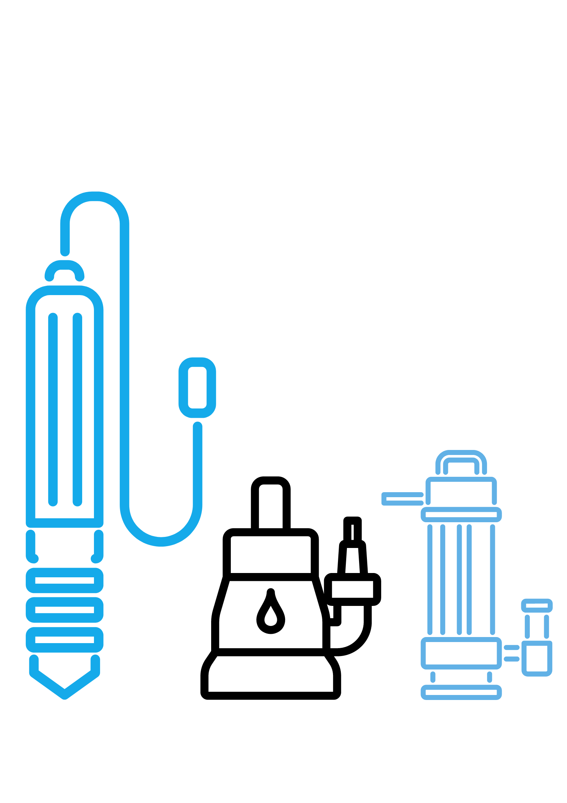

Borehole water pumping solutions and installations
After you have completed drilling a borehole, the next step is thinking about how you will draw water from it. You can decide to do it manually using a rope but this method only works when you do not need a lot of water. When you depend on the borehole water a lot, then investing in a borehole pump is the way to go.
If you want to get value out of the borehole you have dug, then you must get the right pump for it. This is the only way you can draw water from the borehole with ease. Before you can consider the borehole pump prices in Kenya, it is best that you first know whether the pump is right for your needs.